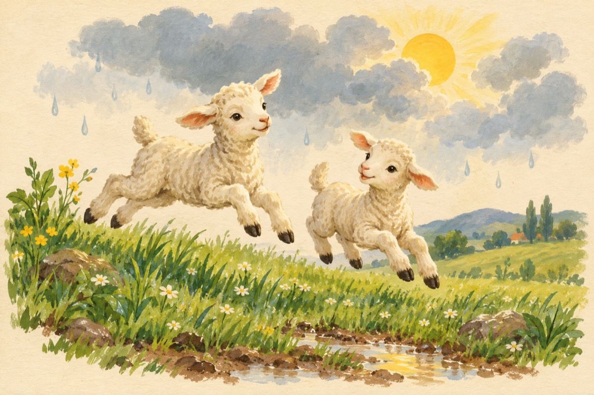

A fi
De la nori am învățat zbuciumul
Luptându-ne să ieșim spre lumină
Și semnul a fost fulgerul
A soarelui semnal, a soarelui fărâmă
De la ploaie am învățat să creștem
De la mieii voioși ca să zburdăm
Mai fioroși ca zimbrii câteodată suntem
Și doar în vise reușim ca să zburăm
De la iarbă am învățat ca să ne iubim strămoșii
Ce rod au dat pământului cu trupul lor
Copii sunt ce-au fost cândva părinții
Perpetuum viu ce duce-n viitor
Și cum nimic nu este la-ntâmplare
Cum noi și chiar acest pământ ca dar
Nu am fi fost fără lumina de la soare
Decât un uriaș în cosmos, un ghețar
Vasile Groza